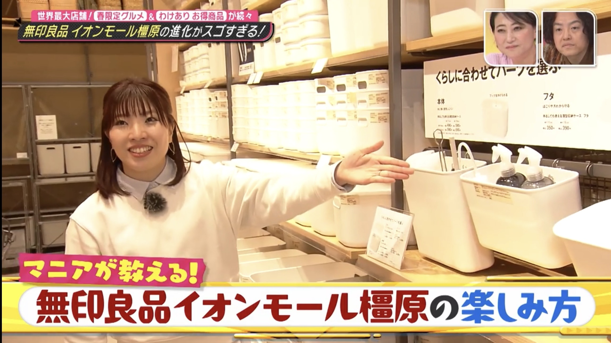
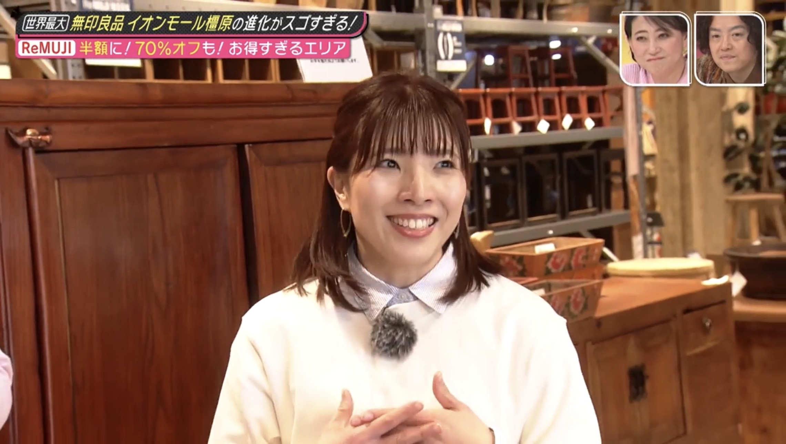
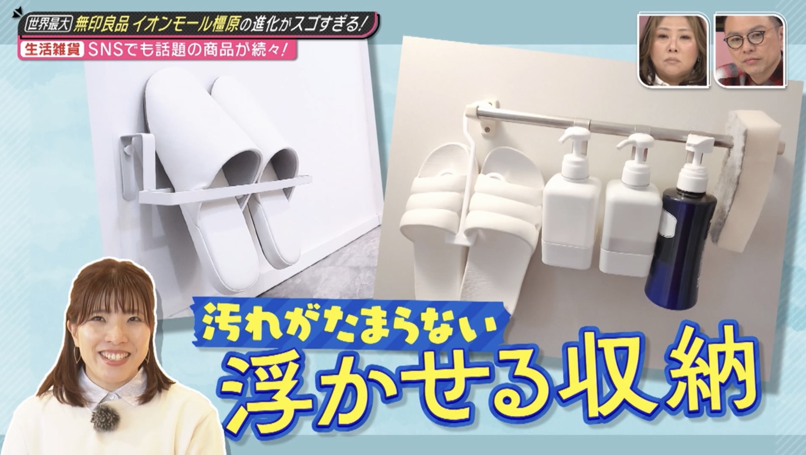

ミサワホーム近畿｜収納設計監修｜オンラインセミナー開催
公式ホームページ公開
収納・暮らしの専門家として、教育機関・企業・住宅会社などで、講演・メディア出演・収納設計監修を行っています。


片づけから、暮らしと働き方を整える講座
子どもから大人まで、対象や目的に合わせた整理収納・暮らしの講演を行っています。
園・学校・PTA向けでは、家庭科の「整理・整とん」の考え方をベースに、
ワークや実例を交えながら、片づけを自分ごととして楽しく学べる内容を提案。
子ども向けには、魔法使いの姿の「すっきりせんせい」として登壇し、
引き出し整理ワーク「すっきりタイムチャレンジ」などの体験型プログラムも取り入れています。
一般・企業向けでは、整理収納を通した家事負担の軽減や、
家庭と仕事を両立しやすくする暮らしの仕組みづくりなど、
毎日の生活にすぐ取り入れられる内容をわかりやすくお伝えします。
オリジナルの「すっきりおうち5Sメソッド」「すっきり5つのじゅもん」などを用い、
対象や会場に合わせて内容を構成しています。
暮らしやすさから逆算した収納設計
住宅会社・モデルハウス・店舗などの収納設計監修・スタイリング監修を行います。
生活動線や使用シーンをもとに、暮らしに合わせた収納計画を設計。
間取りや収納スペースを読み取りながら、
手描きの収納レイアウト図を作成し、
収納構成・収納用品選定・設計仕様書・スタイリング用物品リストまで
トータルで提案します。
収納用品は無印良品をはじめ、100円ショップや各メーカーから、用途・ご予算に合わせて選定します。
実際の暮らしを想定した「使いやすい収納」を設計し、
現地での収納・スタイリングまで一貫して対応。
モデルハウスの見せ方や、暮らしのイメージづくりまでサポートします。
収納・暮らしの専門家・自宅で約1,000点を愛用する無印良品マニアとして発信
テレビ・雑誌・WEBなどで、収納・家事・暮らしをテーマに、実用的なアイデアや商品を紹介しています。
無印良品マニア歴26年。自宅では家具・収納用品・日用品・食品など、約1,000点の無印良品を愛用しています。
無印良品をはじめ、100円ショップや各メーカーの収納用品・生活雑貨・便利グッズなど、幅広い商品ジャンルに対応しています。
商品紹介・企画監修・収納スタイリングなどのご相談にも対応しています。

滋賀県在住。2児の母。
使いやすく、続けやすい収納を研究・提案しています。
片づけが得意ではなかった経験から、
見た目だけでなく、実際の暮らしで無理なく続く仕組みを大切にしています。
無印良品マニア歴26年。自宅では新商品から定番まで、
家具・収納用品・日用品・食品など、約1,000点の無印良品を愛用しています。
現在は「収納・暮らしの専門家」として、
実際の暮らしや生活動線をもとにした収納設計・仕組みづくりを軸に活動。
住宅・モデルハウスの収納設計監修、企業・商業施設での講演、
学校での出前授業、テレビ・雑誌・Webなどのメディア出演・監修を行っています。
新しい商品や暮らしの変化も取り入れながら、
「使いやすい」「戻しやすい」「続けやすい」収納を考え、提案しています。
資格
整理収納や暮らしの仕組みづくりを専門に、 テレビ・雑誌・Webメディアでの取材、出演、商品紹介・監修に対応しています。






講演・セミナー、収納設計監修、メディア出演などのご依頼を承っています。
教育機関・企業・住宅会社・メディアなど、さまざまな場面でご相談いただけます。
内容・規模・事前準備の有無によりお見積りいたします。
ご予算や目的に応じて柔軟に対応しておりますので、まずはご相談ください。
※企業・団体向けの目安料金です。学校・PTA・行政・地域団体など、予算に応じたご相談も承ります。お気軽にお問い合わせください。
既存のお住まいでの仕分け・収納アドバイス・暮らし動線の見直しなど、
お客様と一緒に整理を進めながら、実際の暮らしに合わせて整えるサポートを行っています。
4時間 40,000円〜
さらにご希望の方には、収納用品選定や収納レイアウト提案など、
収納プラン作成も追加で対応可能です。
1箇所 30,000円〜
（キッチン・パントリー・洗面収納など）
※収納用品代別途
片づけや収納のお悩みに対し、オンラインでのアドバイスも対応可能です。
初回30分無料／継続サポート 60分10,000円〜
※ご希望の方はお問い合わせよりご相談ください。
※交通費別途（滋賀県大津市発）
※遠方出張・宿泊が必要な場合は別途ご相談
※内容や規模によりお見積りいたします。
収納・暮らしの専門家として、講演・セミナー、収納設計監修、メディア出演・掲載などのご相談を承っております。
企画段階のご相談や日程の確認だけでもお気軽にお問い合わせください。
通常24時間以内に返信いたします。